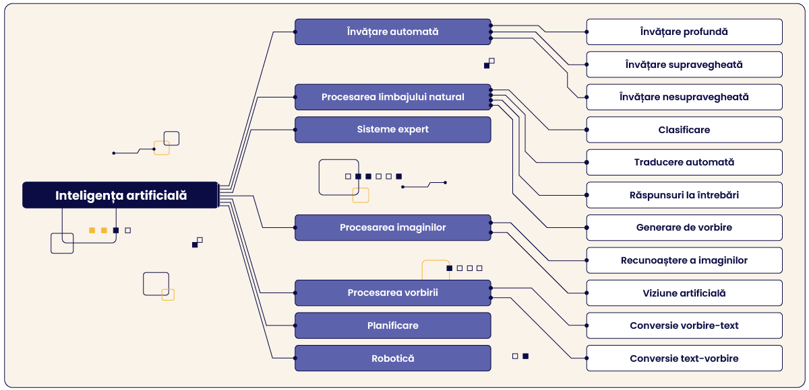

Inteligența artificială (IA) este un domeniu al informaticii care se ocupă cu dezvoltarea de sisteme sau programe capabile să efectueze sarcini care, în mod normal, necesită inteligență umană. Aceste sarcini pot include:
Recunoaștere vocală (ex: Siri, Alexa);
Vedere computerizată (ex: recunoașterea fețelor în poze);
Luarea deciziilor (ex: sisteme de recomandare, cum ar fi Netflix sau Amazon);
Învățare automată (sisteme care învață din date, fără a fi programate explicit).
Practic, IA încearcă să imite sau să reproducă moduri de gândire, percepție sau învățare specifice oamenilor, folosind algoritmi, rețele neuronale artificiale, modele statistice și baze de date masive.
Pentru a înțelege și mai bine inteligența artificială, mai jos avem o poza care ne explică ramurile IA.

1.2 Ce este machine learning (ML)?
Machine learning, sau învățarea automată, este o subcategorie a inteligenței artificiale care se axează pe dezvoltarea de algoritmi capabili să „învețe” din date. În loc ca un programator să scrie reguli explicite pentru fiecare posibilă situație, sistemul este antrenat prin exemple și devine capabil să recunoască modele sau să anticipeze rezultate pe cont propriu.
De exemplu, un program de ML poate fi antrenat cu mii de imagini cu pisici pentru a recunoaște o pisică într-o fotografie nouă, fără ca cineva să-i fi oferit o definiție formală a unei pisici. Prin acest proces, sistemul dezvoltă propriile reguli și criterii statistice, în funcție de ce a „văzut” în datele de instruire.
Machine learning este utilizat pe scară largă în numeroase domenii: de la filtrarea spamului în e-mailuri, la detectarea fraudelor bancare, prognoze meteo, asistență medicală și chiar în automobilele autonome.
1.3 Tipuri de inteligență artificială
Inteligența artificială poate fi clasificată, în funcție de complexitate și autonomie, în trei tipuri principale:
IA slabă (sau narrow AI) – Programe specializate pentru o singură sarcină, cum sunt Siri, Alexa sau sistemele de recomandare.
IA generală (AGI – Artificial General Intelligence) – Un sistem teoretic capabil să învețe și să aplice cunoștințe în orice domeniu, asemenea unui om.
IA superioară (Superintelligence) – O formă ipotetică de inteligență care ar depăși capacitățile umane în toate domeniile. Apare frecvent în science fiction, precum în filmul Ex Machina.
1.4 Istoricul IA
1950 – Alan Turing propune întrebarea „Pot mașinile să gândească?” și introduce Testul Turing.
1956 – La Conferința de la Dartmouth, John McCarthy folosește pentru prima dată termenul „inteligență artificială”.
1960-1970 – Primele programe de rezolvare a problemelor (ex: Logic Theorist, General Problem Solver).
1980 – Apariția sistemelor expert (ex: XCON) și popularizarea IA în industrie.
1997 – IBM Deep Blue îl învinge pe Garry Kasparov la șah.
2011 – IBM Watson câștigă concursul Jeopardy! împotriva campionilor umani.